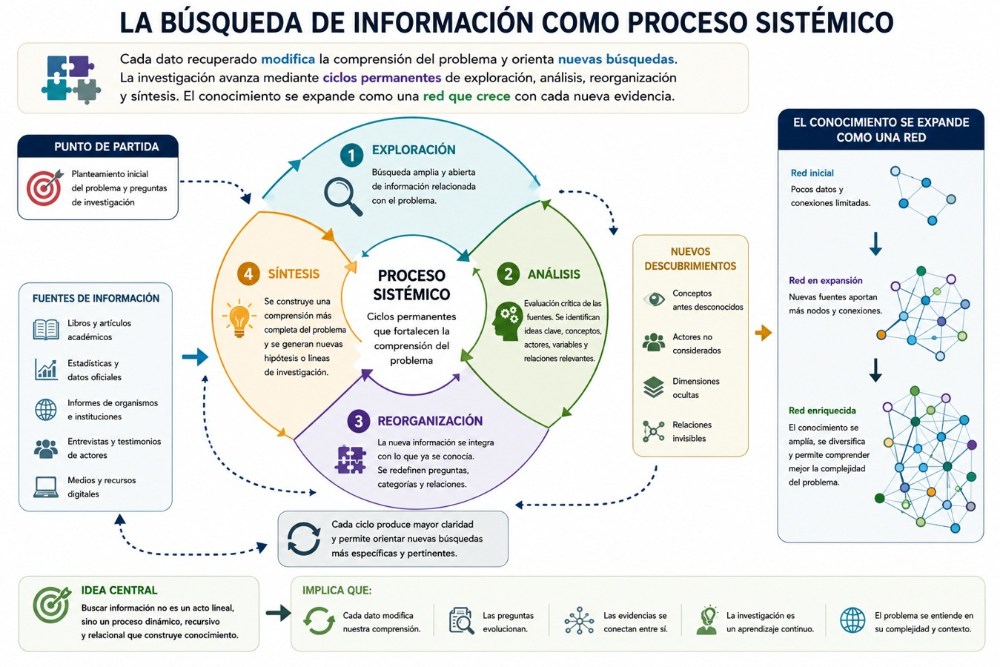
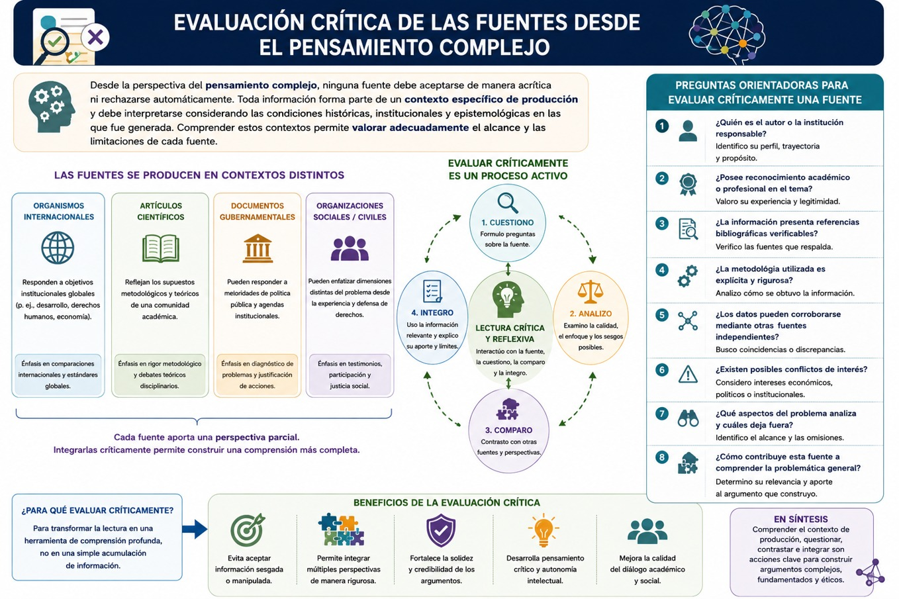
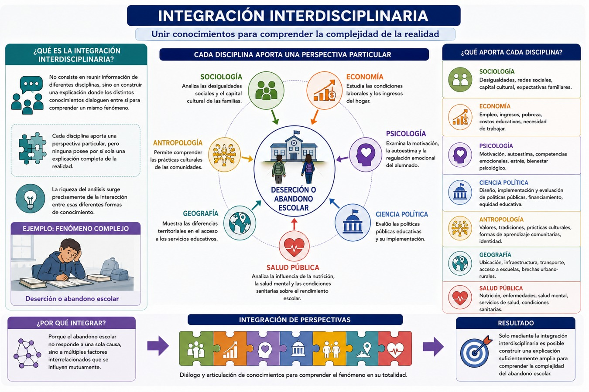

Tradicionalmente, la búsqueda de información se ha entendido como una actividad mecánica consistente en localizar libros, artículos o páginas de internet relacionadas con un determinado tema. Desde esta perspectiva, el éxito de una investigación depende principalmente de la cantidad de documentos encontrados. Sin embargo, esta forma de proceder resulta insuficiente para analizar problemáticas complejas, ya que favorece la acumulación de datos aislados sin establecer relaciones significativas entre ellos. Como estudiante terminas reuniendo grandes cantidades de información que posteriormente resulta difícil integrar dentro de una explicación coherente.
El pensamiento complejo propone una visión diferente. Buscar información significa construir progresivamente una red de conocimientos donde cada nueva evidencia modifica, complementa o cuestiona las interpretaciones anteriores. La investigación deja de ser una actividad lineal para convertirse en un proceso dinámico de reorganización permanente del conocimiento. Edgar Morin sostiene que conocer implica contextualizar, relacionar e integrar; por ello, ninguna fuente puede comprenderse de manera independiente del sistema de relaciones donde adquiere significado. Del mismo modo, como hemos visto, Mario Bunge afirma que los sistemas sociales deben analizarse considerando simultáneamente su composición, estructura, funciones y relaciones con otros sistemas, lo que exige recuperar información proveniente de múltiples niveles de análisis.
Además, los modelos argumentativos de Stephen Toulmin y Chaim Perelman fortalecen esta concepción. Toulmin muestra que las evidencias únicamente adquieren valor cuando pueden integrarse dentro de una estructura argumentativa coherente, mientras que Perelman recuerda que toda selección de información debe realizarse considerando el auditorio al que se dirige el discurso. En consecuencia, recuperar información no significa simplemente recopilar documentos, sino seleccionar aquellas evidencias que permitan construir argumentos sólidos, contextualizados y pertinentes para un determinado proceso de deliberación.
En ese sentido, veremos que la búsqueda de información es un proceso sistémico, que implica la evaluación crítica de las fuentes, la integración interdisciplinaria del conocimiento, la organización de evidencias mediante el modelo de Toulmin, la planificación del discurso conforme a la propuesta de Perelman y las estrategias metacognitivas que permiten al estudiante autorregular la construcción de un texto argumentativo. El propósito de este tema es que la recuperación de información deje de entenderse como una etapa previa de la investigación y sea concebida como parte del propio proceso de construcción del conocimiento.
La búsqueda de información como proceso sistémico
Uno de los errores más frecuentes entre quienes inician una investigación consiste en creer que buscar información equivale a escribir algunas palabras en un buscador de internet y seleccionar los primeros resultados disponibles. Esta práctica suele conducir a trabajos donde las fuentes aparecen desarticuladas, las ideas se repiten sin análisis crítico y los argumentos carecen de una estructura conceptual sólida. Desde la perspectiva del pensamiento complejo, la búsqueda de información constituye un proceso mucho más amplio que implica identificar relaciones, contrastar perspectivas y reorganizar continuamente el conocimiento disponible.
En este sentido, la búsqueda de información debe entenderse como un proceso sistémico. Esto significa que cada dato recuperado modifica la comprensión del problema y orienta nuevas búsquedas. La investigación no avanza mediante una secuencia lineal de pasos independientes, sino mediante ciclos permanentes de exploración, análisis, reorganización y síntesis. Cada nueva fuente permite identificar conceptos desconocidos, actores no considerados, dimensiones ocultas o relaciones que anteriormente permanecían invisibles. El conocimiento se expande como una red cuyos nodos aumentan progresivamente conforme se incorporan nuevas evidencias.
Esta forma de investigar se relaciona directamente con el aprendizaje en red y el conectivismo, estudiados en bloques anteriores. Como vimos, George Siemens (2005) sostiene que aprender implica establecer conexiones entre distintas fuentes de información distribuidas en múltiples nodos de conocimiento por lo tanto, el aprendizaje ya no depende exclusivamente del profesor o del libro de texto; se construye mediante la interacción entre artículos científicos, bases de datos, organismos internacionales, comunidades académicas, repositorios institucionales y experiencias de diversos actores sociales. Por ello, la calidad del aprendizaje depende, por tanto, de la capacidad para identificar conexiones significativas entre estas múltiples fuentes. El siguiente gráfico presenta en una imagen la sistematización de la información:

Supongamos que deseas investigar el fenómeno del desplazamiento forzado por violencia. Una búsqueda tradicional podría limitarse a consultar estadísticas oficiales sobre personas desplazadas. Sin embargo, una búsqueda sistémica comenzaría formulando preguntas mucho más amplias como por ejemplo:
- • ¿Qué factores económicos intervienen en el desplazamiento?
- • ¿Qué papel desempeñan los grupos delictivos?
- • ¿Cómo influye el cambio climático en la movilidad humana?
- • ¿Qué instituciones participan en la atención a las víctimas?
- • ¿Cuáles son las consecuencias psicológicas y educativas del desplazamiento?
- • ¿Cómo afectan estas dinámicas al desarrollo regional?
Cada una de estas preguntas conduce hacia nuevas disciplinas y nuevas fuentes documentales. Por ejemplo, la sociología aporta explicaciones sobre la violencia estructural; la economía analiza los procesos productivos; la ciencia política estudia las capacidades institucionales; la psicología examina los efectos emocionales; la geografía investiga las transformaciones territoriales y el derecho analiza los mecanismos de protección jurídica. Así, el fenómeno deja de observarse desde una única perspectiva para convertirse en un sistema donde convergen múltiples dimensiones de análisis.
Desde el pensamiento complejo, esta diversidad no representa un problema metodológico, sino una condición necesaria para comprender la realidad pues como hemos visto Morin afirma que conocer implica contextualizar los fenómenos dentro de sistemas más amplios y reconocer las relaciones de interdependencia que los constituyen. En consecuencia, la recuperación de información no puede limitarse a documentos especializados en una sola disciplina; debe incorporar evidencias provenientes de distintos campos del conocimiento que permitan reconstruir la complejidad del objeto de estudio.
Esta concepción modifica también la forma de organizar las búsquedas bibliográficas, es decir, en lugar de que busques únicamente información sobre un concepto central, deberás identificar conceptos asociados, variables relacionadas y procesos complementarios. Por ejemplo, si investigas la pobreza, también deberás explorar desigualdad, mercado laboral, políticas públicas, educación, salud, movilidad social, desarrollo regional y exclusión. Tu investigación se convierte así en una red de conceptos interconectados que progresivamente conforman una explicación más amplia del problema.
Desde la perspectiva argumentativa, este procedimiento fortalece la calidad de las evidencias ya que como Toulmin señala, un argumento sólido requiere datos suficientes para justificar la tesis defendida. Una búsqueda limitada produce argumentos débiles porque las evidencias disponibles resultan insuficientes para explicar fenómenos complejos. En cambio, cuando las fuentes provienen de múltiples dimensiones del sistema, las garantías que vinculan dichas evidencias con la conclusión adquieren mayor consistencia teórica.
Evaluación crítica de las fuentes
La disponibilidad casi ilimitada de información en internet ha transformado profundamente la investigación académica. Nunca antes en la historia de la humanidad había sido posible acceder con tanta facilidad a libros, artículos científicos, informes técnicos, estadísticas oficiales y bases de datos internacionales. Sin embargo, esta abundancia plantea un nuevo desafío: aprender a distinguir entre información confiable e información carente de sustento científico. La calidad de una argumentación depende directamente de la calidad de las fuentes que la respaldan.
Evaluar críticamente una fuente significa analizar mucho más que su contenido, implica preguntarse quién la produce, con qué propósito fue elaborada, qué metodología utilizó, cuáles son sus evidencias, qué intereses pueden influir en sus conclusiones y cómo dialoga con otras investigaciones existentes. Esta evaluación constituye una competencia esencial del pensamiento crítico y de la alfabetización informacional.
Desde la perspectiva del pensamiento complejo, ninguna fuente debe aceptarse de manera acrítica ni rechazarse automáticamente. Toda información forma parte de un contexto específico de producción y debe interpretarse considerando las condiciones históricas, institucionales y epistemológicas en las que fue generada. Un informe elaborado por un organismo internacional responde a determinados objetivos institucionales; un artículo científico refleja los supuestos metodológicos de una comunidad académica; un documento gubernamental puede responder a prioridades de política pública; una organización social puede enfatizar dimensiones distintas del mismo problema. Comprender estos contextos permite valorar adecuadamente el alcance y las limitaciones de cada fuente.
Una estrategia útil consiste en formular una serie de preguntas orientadoras durante la lectura:
- • ¿Quién es el autor o la institución responsable?
- • ¿Posee reconocimiento académico o profesional en el tema?
- • ¿La información presenta referencias bibliográficas verificables?
- • ¿La metodología utilizada es explícita y rigurosa?
- • ¿Los datos pueden corroborarse mediante otras fuentes independientes?
- • ¿Existen posibles conflictos de interés?
- • ¿Qué aspectos del problema analiza y cuáles deja fuera?
- • ¿Cómo contribuye esta fuente a comprender la problemática general?
Estas preguntas convierten la lectura en un proceso activo de evaluación crítica y no en una simple acumulación de información. En el siguiente gráfico puedes ver lo que esto implica:

Asimismo, es muy importante que contrastes las fuentes entre sí, es decir, una explicación basada en un único autor difícilmente te permitirá comprender la complejidad de un fenómeno social. En ese sentido, la comparación entre distintas perspectivas te ayudará a la identificación de coincidencias, diferencias y vacíos de conocimiento, enriqueciendo posteriormente la construcción tu argumento. Como podrás notar, esta práctica coincide con la propuesta de Perelman, quien sostiene que toda argumentación sólida debe considerar la existencia de posibles objeciones y construir respuestas fundamentadas frente a ellas. Del mismo modo, Toulmin incorpora la refutación como un componente esencial del argumento, recordando que toda afirmación debe reconocer los límites de su propia validez.
Por ello, evaluar críticamente las fuentes no consiste únicamente en decidir cuáles utilizar, sino en comprender las relaciones que existen entre ellas. Algunas aportarán datos empíricos; otras ofrecerán explicaciones teóricas; algunas permitirán contextualizar históricamente el problema y otras mostrarán estudios de caso específicos. Así, la fortaleza del argumento dependerá de tu capacidad para integrar estas contribuciones dentro de una explicación coherente.
En síntesis, la evaluación crítica de las fuentes constituye un proceso de análisis, comparación y contextualización que permite seleccionar información pertinente, confiable y suficiente para sustentar una argumentación rigurosa. Lejos de ser una tarea exclusivamente técnica, representa una competencia intelectual que articula pensamiento complejo, metacognición y razonamiento crítico, sentando las bases para la construcción de conocimiento científicamente fundamentado.
Integración interdisciplinaria
Como vimos en el primer bloque, uno de los principios fundamentales del pensamiento complejo consiste en reconocer que ningún fenómeno social puede comprenderse adecuadamente desde una única disciplina. Las fronteras tradicionales entre la sociología, la economía, la psicología, la ciencia política, la biología, la antropología o el derecho responden a formas históricas de organización del conocimiento; sin embargo, los problemas que enfrenta la sociedad contemporánea trascienden esos límites disciplinarios. El cambio climático, la pobreza, la violencia, las migraciones, las pandemias, la inteligencia artificial o la seguridad alimentaria constituyen fenómenos multidimensionales cuya comprensión exige integrar aportaciones provenientes de diversos campos del saber.
Durante mucho tiempo la educación promovió una formación altamente especializada, es decir, cada disciplina desarrolló sus propios conceptos, métodos y formas de interpretar la realidad, generando importantes avances científicos. Sin embargo, esta especialización también produjo una fragmentación del conocimiento que dificulta comprender problemas donde intervienen simultáneamente factores naturales, sociales, culturales, tecnológicos e institucionales. Justamente Edgar Morin advirtió que uno de los principales desafíos del conocimiento contemporáneo consiste precisamente en superar esta fragmentación mediante una inteligencia capaz de establecer conexiones entre distintos saberes.
Así, la integración interdisciplinaria representa una respuesta a este desafío y ello no consiste simplemente en reunir información procedente de varias disciplinas, sino en construir una explicación donde los distintos conocimientos dialoguen entre sí para comprender un mismo fenómeno. Cada disciplina aporta una perspectiva particular, pero ninguna posee por sí sola una explicación completa de la realidad. La riqueza del análisis surge precisamente de la interacción entre esas diferentes formas de conocimiento.
Por ejemplo, si analizas el fenómeno de la deserción o abandono escolar, una aproximación exclusivamente pedagógica podría concentrarse en los procesos de enseñanza y aprendizaje. Sin embargo, una integración interdisciplinaria incorporaría otras dimensiones complementarias, a grandes rasgos podríamos decir que cada disciplina aportaría una perspectiva en particular sobre el fenómeno, observa el siguiente ejemplo:

Desde la perspectiva argumentativa, esta integración fortalece considerablemente la calidad de los razonamientos. Stephen Toulmin señala que un argumento sólido depende de la calidad de sus evidencias y de las garantías que permiten vincular dichas evidencias con la conclusión. Cuando las evidencias provienen de diferentes disciplinas, las garantías adquieren mayor capacidad explicativa porque muestran que la tesis no se sustenta únicamente en un tipo de información, sino en un conjunto articulado de conocimientos.
Por su parte, Chaim Perelman recuerda que la eficacia de la argumentación también depende del auditorio. En muchos contextos profesionales los destinatarios del discurso pertenecen a disciplinas distintas. Un proyecto sobre gestión del agua puede ser evaluado simultáneamente por ingenieros, economistas, ambientalistas, autoridades gubernamentales y representantes comunitarios. La integración interdisciplinaria permite construir argumentos comprensibles y relevantes para todos ellos, favoreciendo una deliberación más amplia y mejor fundamentada.
- Toulmin, Stephen (2003). Los usos de la argumentación. España: Península.
- Perelman, Chaim (1997). El imperio retórico. Retórica y argumentación. Colombia: Norma.
- Perelman, C., & Olbrechts-Tyteca, L. (1989). Tratado de la argumentación. La nueva retórica. Gredos.